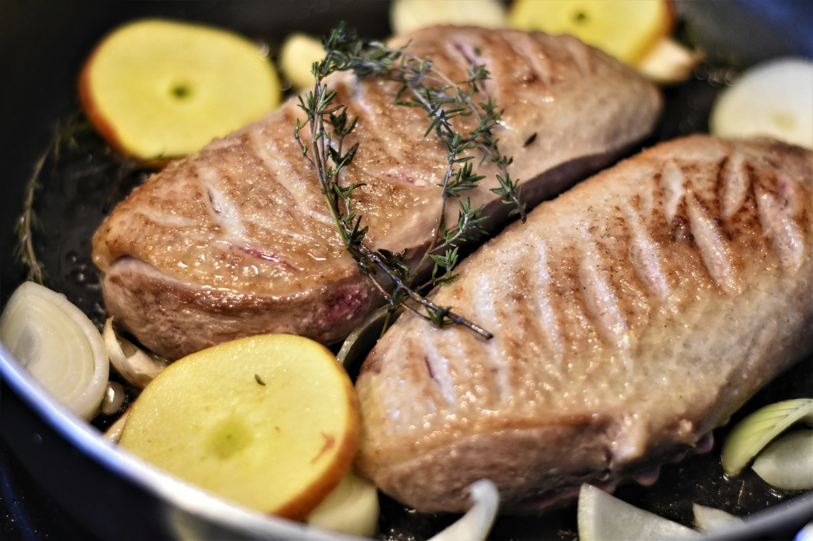
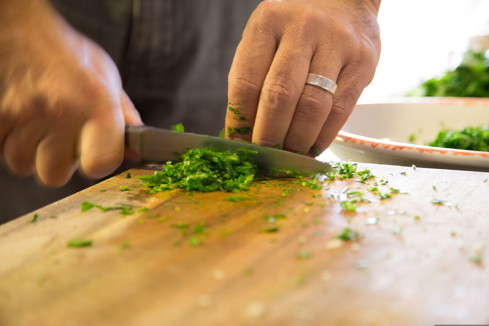
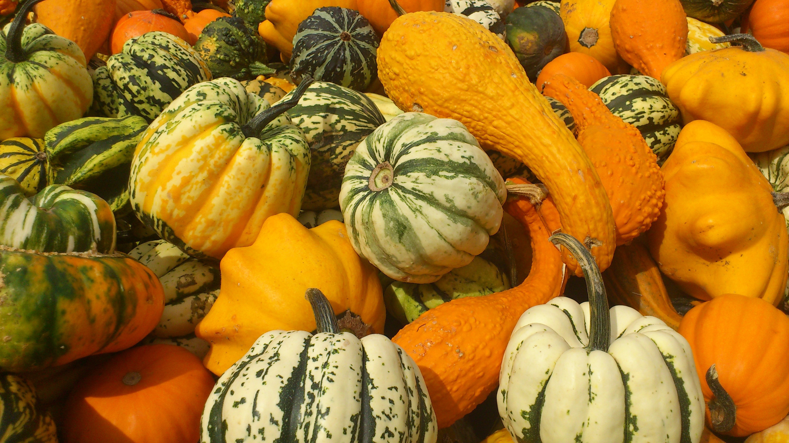

Recettes vedettes
Des classiques d’ici et d’ailleurs, testés par nos étudiant(e)s.

Techniques
Couper, saisir, rôtir : maîtrisez l’essentiel sans équipement compliqué.

Saisonnier
Quoi cuisiner selon le mois? Misez sur la fraîcheur locale.